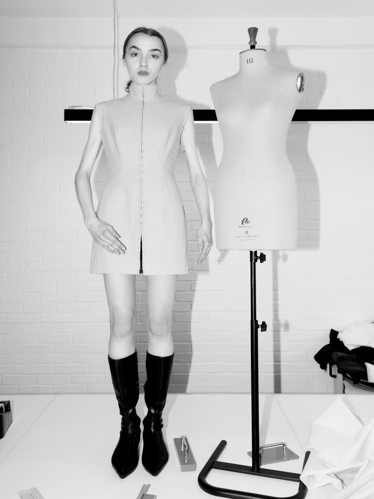
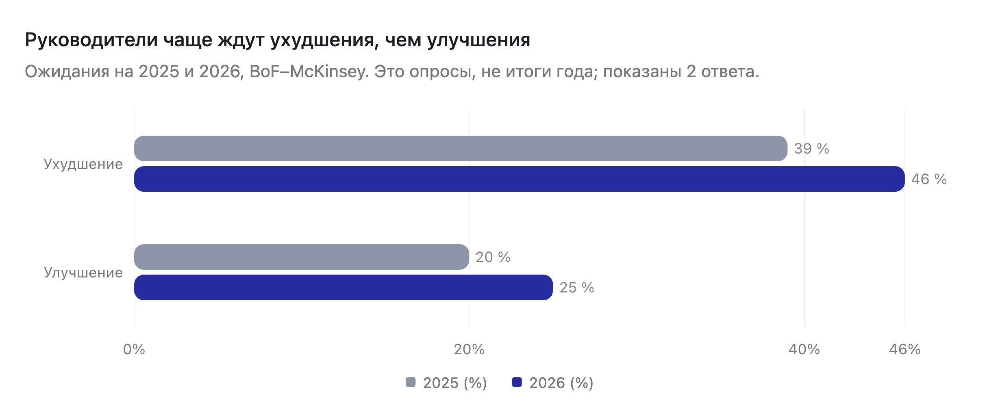
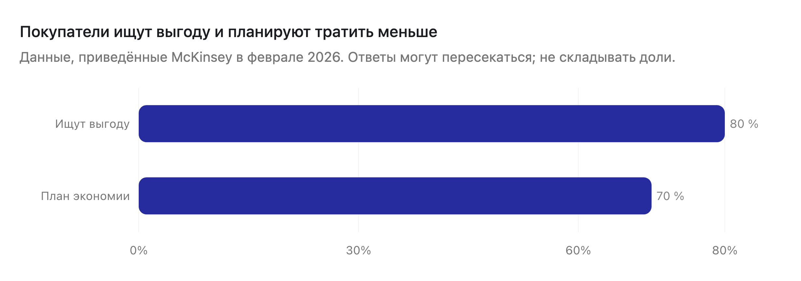
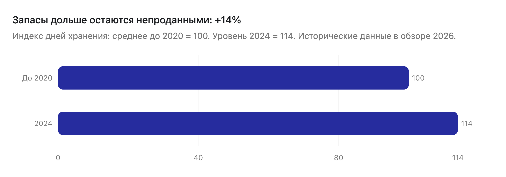
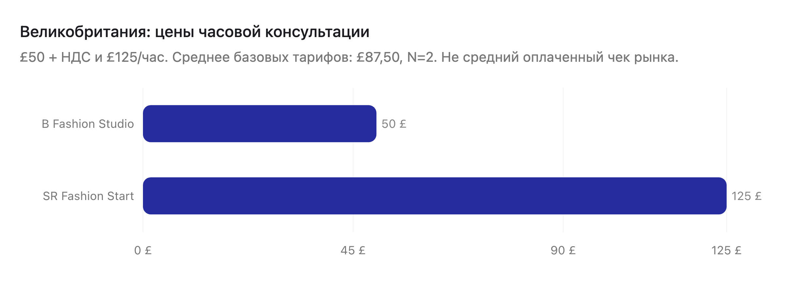

руководителей ждут ухудшения
Ожидания на 2026: на 7 п. п. больше предыдущего опроса.
BoF–McKinsey · не итоги годаИсточникCSS / АНАЛИЗ РЫНКА / ПРОДАЖИ
Великобритания, США и Европа: от текущих проблем рынка к потребностям владельцев, конкретным услугам и продажам через вебинар.
Начать с главных выводов ↓
01 / РЫНОК В ЦИФРАХ И ВЫВОДЫ ДЛЯ CSS
McKinsey прогнозирует небольшой рост мировой fashion-индустрии, а не новый бум. Покупатели ищут выгоду; товар дольше остаётся в запасах; в США поставки осложняет торговая политика. Продажи могут продолжаться, но это не означает, что у бренда хватает прибыли и денег на следующий выпуск. Прогноз рынка.
Начать с услуг, которые помогают подготовить конкретную коллекцию и избежать дорогих ошибок: проверка задания и образцов, подбор подходящего производства, расчёт партии и координация выпуска. Платный разбор — для неясной проблемы; курс — для тех, кто хочет делать сам. Спрос именно на продукты CSS ещё нужно подтвердить оплатами.
Ожидания на 2026: на 7 п. п. больше предыдущего опроса.
BoF–McKinsey · не итоги годаИсточникДанные из обзора февраля 2026. 80% ищут выгодные предложения.
McKinsey · выборки в обзоре не уточненыИсточникДни хранения в 2024 относительно среднего до 2020.
Исторические данные, опубликованные в свежем обзореИсточникУчастники опроса USFIA 2026 выделяют тарифы и неопределённость условий импорта.
Ведущие бренды, ритейлеры и импортёры США · не все малые брендыИсточник
Для CSS: не обещать рост бренда вообще. Предлагать решение ближайшей задачи и показывать результат: проверенное изделие, понятную смету, подходящее производство.

| Поведение из обзора | Доля |
|---|---|
| Ищут выгодную покупку | 80% |
| Планируют тратить меньше | 70% |
Доли могут пересекаться; их нельзя складывать.
Для CSS: проверять цену, затраты и обоснованность партии до большого заказа. В контенте показывать, как качество и отличие изделия сочетаются с ценой, а не советовать всем снижать цену.

Для CSS: продавать разбор объёма выпуска: сколько стоит партия, что останется при неполной продаже, когда возможен повторный заказ. Не обещать универсальную экономию в процентах.

| Провайдер | Базовая цена |
|---|---|
| B Fashion Studio | £50 + НДС |
| SR Fashion Start | £125 |
£87,50 — среднее 2 базовых тарифов, не оплаченный чек рынка.
Для CSS: разбор за £350–750 пока является нашей ценовой гипотезой. Чтобы отличаться от часового совета, он должен включать подготовку, расчёты и письменный план. Либо нужен более простой входной продукт.
Средний оплаченный чек услуг пока неизвестен. Ниже — цены предложения с конкретной единицей и составом. Диапазон консультации нельзя сравнивать с бюджетом коллекции, а пошив образца — со всей разработкой изделия.
| Что продают | Проверенные ценовые ориентиры | Что это означает для CSS |
|---|---|---|
| Разовая консультация | UK: £50 + НДС / £125 за час; среднее 2 базовых ставок — £87,50. США: $250 за час у 1 провайдера. B Fashion, SR, Michigan. | Дорогой разбор должен включать больше, чем звонок. Цена зависит от подготовки и результата. |
| Технические документы | Personal: £49–99 за дизайн; Techpack.uk: £50 / £70 / £120 за разные пакеты. США, Michigan: от $250. Personal, Techpack, Michigan. | За один файл есть низкие цены. Проект CSS отличать реальной работой над изделием, если она входит. |
| Пошив образца | Personal, Бангладеш: £30–70 за образец. Fashionwide, Лондон: £150 / £250 / £350 / £450 по стадии и типу. Michigan, США: от $125. Personal, Fashionwide, Michigan. | Страна исполнения и состав сильно меняют смету. Лекала, материалы, примерки и исправления считать отдельно. |
| Курс по производству | SYFB: £697, 16 модулей, шаблоны и доступ. Один конкретный курс, не средняя рынка. Продукт. | Практикум CSS продавать через работу на своей коллекции и обратную связь, а не только число уроков. |
| Разработка и подготовка коллекции | SR: ≈£2 000 за интенсивный проект. Fashionwide: £1 500 / £2 800 за 5 / 10 образов; расширенный старт от £2 500 / £4 500. SR, Fashionwide. | Проектные бюджеты в тысячи встречаются, но это разный объём работы. £4 500 не верхний предел и не средний чек. |
| Чистый подбор фабрики и ежемесячное управление | Сопоставимая средняя не установлена. У ряда конкурентов — индивидуальная смета. Подробности и ограничения. | Ценовые гипотезы CSS нельзя выдавать за доказанный рыночный прайс. Нужны своя себестоимость и реальные оплаты. |
McKinsey описывает его как самый быстрорастущий сегмент. Бренды конкурируют не только низкой ценой, но и качеством, дизайном и опытом покупки. Источник.
Для CSS: показать, как образец, посадка и исполнение поддерживают заявленную цену. Не обещать, что улучшение изделия само обеспечит продажи.
В обзоре это одна из ключевых тем 2026. Точного процента сверх «более половины» статья не даёт. Источник.
Для CSS: обсуждать качество и повторный выпуск востребованных изделий. Рекламой и удержанием занимается профильный маркетолог, если у CSS нет такой компетенции.
Июль 2026, ONS. Онлайн-расходы за 3 месяца к июлю выросли на 11% год к году. Обе цифры относятся ко всей рознице, не только к одежде. Источник.
Для CSS: онлайн-канал нельзя считать исчезающим. Но клиенту всё равно нужно считать доставку, возвраты и прибыль на заказ.
Опрос USFIA выделяет риски торговой политики. При сравнении поставщиков нужно учитывать перевозку и стоимость ввоза, а не только пошив. Источник.
Для CSS: сравнение вариантов с понятными условиями; расчёт таможенных расходов — с профильным специалистом.
Деньги уходят на рекламу, доставку, возвраты и следующую партию. Часть остаётся в непроданной одежде. Прежде чем увеличивать выпуск, нужно посчитать, сколько бренд зарабатывает на заказе.
Для CSS: разбор затрат и объёма следующей партии. Если проблема в рекламе, нужен маркетолог, а не новая фабрика.
Неясное задание, неподходящие материалы или фабрика приводят к переделкам и переносу выпуска. Здесь легче объяснить, за какой конкретный результат платит клиент.
Для CSS: техническая проверка, пошив образцов, подбор производства и согласование условий.
У маленькой команды не хватает времени; у растущей — поставщики и сроки не согласованы между собой. Больше заказов может означать больше задержек, а не более сильный бизнес.
Для CSS: план материалов и пошива, помощь с конкретной коллекцией или регулярная координация производства.
Основания: посты и комментарии, отраслевые показатели, предложения конкурентов.
02 / СИТУАЦИЯ НА РЫНКЕ
Выручка — это сумма продаж, а не заработок владельца. Из неё нужно оплатить товар, рекламу, доставку и возвраты. Кроме того, следующую партию часто оплачивают до того, как продали предыдущую. Поэтому даже продающему бренду может не хватать денег на новый выпуск.
| Показатель | Значение и период | Кого / что измеряли | Практический вывод для CSS |
|---|---|---|---|
| Ожидают ухудшения условий | 46% на 2026; 39% в предыдущем опросе. Разница: +7 п. п. | Руководители в опросе BoF–McKinsey; ожидания, не итог года. Источник | Объяснять цену через конкретную задачу и риск ошибки, а не обещание «развить бренд». |
| Ожидают улучшения условий | 25% на 2026; 20% в предыдущем опросе. Разница: +5 п. п. | Тот же опрос руководителей. Источник | Не строить всю рекламу на кризисе: есть бренды, готовящие новые продукты и рост. |
| Планируют тратить меньше | 70%, в обзоре февраля 2026 | Потребители в исследованиях, приведённых McKinsey; не отдельная доля покупателей каждого малого бренда. Источник | Перед большой партией проверять цену, ассортимент и реальные продажи клиента. |
| Ищут более выгодную покупку | 80%, в обзоре февраля 2026 | Потребительское поведение: поиск выгодного предложения. Источник | Показывать качество и отличие товара; не считать, что «дорого» автоматически означает «ценность непонятна». |
| Товар дольше остаётся в запасах | +14% в днях хранения за 2024 к среднему до 2020 | Исторические отраслевые данные в свежем обзоре, не замер сентября 2026. Источник | Продавать сравнение объёма партии и повторных заказов. Меньше складских остатков — цель расчёта, не гарантированная экономия CSS. |
| Американская торговая политика — один из 2 главных вызовов | 92% респондентов, 2026 | USFIA: руководители ведущих брендов, ритейлеров, импортёров и оптовиков. Источник | Для поставок в США сравнивать полную стоимость и риск маршрутов вместе с таможенным специалистом. |
| Доля онлайн-продаж в Великобритании | 28,3%, июль 2026 | ONS: вся розница, не только одежда. Источник | Онлайн остаётся важным каналом; показатель не доказывает рост продаж независимых fashion-брендов. |
| Рост онлайн-расходов в Великобритании | +11% год к году за 3 месяца к июлю 2026 | ONS: вся розница. Источник | Не путать рост канала с прибылью клиента: отдельно считать рекламу, доставку и возвраты. |
Источник и сравнение с прошлым опросом. П. п. — процентные пункты: разница между двумя долями.
Переделки образцов, неподходящая фабрика, слабые повторные продажи и деньги в остатках могут возникнуть на любом рынке. В исследовании нет сопоставимого опроса малых брендов UK / US / EU, который позволил бы сказать, где каждая боль распространена чаще или где за помощь платят больше.
| Рынок / условия | Отличие в источниках | Как изменить предложение CSS |
|---|---|---|
| США · импорт | Тарифы и неопределённость торговой политики: 92% в опросе USFIA. Это дополнительный риск стоимости ввоза, а не доказательство, что производство в США или UK выгоднее. | В сравнении фабрик отдельно показать цену товара, перевозку, пошлины, сроки и возможные изменения. Таможенные расчёты — с профильным специалистом. |
| ЕС · требования к данным | 20 июля 2026 запущен реестр цифровых паспортов продукции. Это развитие европейской системы, а не немедленное обязательство оформить паспорт на всю одежду. Еврокомиссия. | Организовать сведения о материалах и поставщиках для клиента. Применимость и сроки обязательств определяет специалист; не продавать «срочное соответствие всем правилам». |
| Великобритания · локальное производство | UKFT рассматривает возможности и ограничения производства внутри страны. Близость фабрики не означает низкую цену или наличие нужной специализации. Это отраслевой контекст, не количественное преимущество UK. UKFT. | Предлагать удобство разработки и связи с командой только там, где CSS реально это обеспечивает. Сравнить локальный вариант с другими по смете и срокам. |
США и ЕС здесь выделены по конкретным условиям торговли и регулирования. UK не выделяется как рынок с «уникальными болями». «Европа» не равна ЕС: применимость правил зависит от рынка продажи и продукта.
03 / ГДЕ БРЕНД ТЕРЯЕТ ДЕНЬГИ И ЧТО ЕМУ ПРОДАТЬ
Недостаточно сказать клиенту, что деньги теряются «на всех этапах». Нужно найти конкретную причину, посчитать её по данным бренда и предложить ограниченный результат. Ниже — 8 ситуаций для консультаций, рекламы и выбора услуги.
| Боль и причина потерь | Что посчитать у клиента | Что продать CSS | Формулировка для рекламы |
|---|---|---|---|
| Фабрика требует больше вещей, чем бренд может продать. Деньги остаются в запасах; уценка уменьшает заработок. Обсуждение минимальных партий. | Количество непроданных вещей × затраты на единицу; доля продаж без скидки; расходы на хранение. | Расчёт 2–3 вариантов партии и повторного заказа. Затем — подбор производства под выбранный объём. | «Фабрика просит большую партию. Сколько денег вы оставите в непроданной одежде?» |
| Каждый новый образец приходится переделывать. Бренд снова оплачивает работу, материалы и пересылку. Обсуждение разработки. | Число образцов, стоимость каждой переделки и пересылки, дни до согласования. | Проверка задания, посадки и материалов; разработка и пошив согласованного набора образцов. | «Образцы снова не подходят? Разберём причину до следующей оплаты». |
| Контактов много, подходящей фабрики нет. Время уходит на переписку и неподходящие предложения. Около 50 обращений, 11 ответов. | Часы поиска; число ответов; сколько поставщиков проходит критерии категории, партии, качества и срока. | Подбор и проверка фабрик с сопоставимой таблицей условий и этапом тестового образца. | «Не база контактов, а производство под вашу одежду, партию и срок». |
| Материалы или согласования сдвигают выпуск. Готовая реклама и принятые заказы опережают готовность товара. Veronica Velveteen. | Дни задержки; оплаченные работы, которые нельзя использовать вовремя; компенсации и отмены заказов. | Календарь материалов, образцов и пошива; координация конкретного выпуска. | «Запуск назначен, а материалы ещё не приехали? Соберём план выпуска с контрольными датами». |
| Реклама приносит выручку, но не прибыль. После затрат на товар и заказ заработка может не остаться. Кейс снижения ROAS. | На заказ: оплата покупателя минус товар, реклама, комиссии, доставка и ожидаемые возвраты. | Разбор экономики коллекции и ограничений бюджета. Рекламную оптимизацию — только с компетентным партнёром. | «Сколько вы зарабатываете на заказе после рекламы и доставки?» |
| Покупатель возвращает вещь или не оформляет заказ. Причина может быть в посадке, ожиданиях или итоговой цене с доставкой. DEAF IDENTITY. | Возвраты ÷ заказы × 100%; причины возвратов; расходы на обратную доставку; итоговая цена покупки по странам. | При проблеме изделия — проверка посадки и качества. При проблеме доставки / сайта — консультация с профильным специалистом. | «Возвращают из-за посадки? Проверим изделие до повторной партии». |
| Опт требует вложиться сейчас, а деньги придут позже. Большой заказ не всегда можно профинансировать. Marina Moscone, Janus. | Предоплата производства; оптовая цена; срок оплаты магазином; деньги до получения выручки; риск возврата. | Проверка готовности коллекции к опту и план производства. Договорные / кредитные вопросы — со специалистом. | «Готовы к опту? Сначала проверьте, хватит ли денег выполнить заказ». |
| Основатель тратит всё время на поставщиков. Новые коллекции увеличивают число сбоев и согласований. Мастерские, Gymshark: управление поставками. | Часы координации в неделю; число просроченных задач; дни задержки; стоимость внутренней команды. | Внешний координатор производства на коллекцию либо регулярное сопровождение с чёткой ответственностью. | «Каждая коллекция снова держится на вас? Передайте координацию поставщиков». |
«Помогаем развивать бренд» не объясняет результат. Вместо этого: согласованное задание, образец, сравнительная таблица фабрик или календарь выпуска. Подтвердить объём работы и что останется у клиента.
Нет бюджета на производство, нет срочного выпуска либо человек ищет знания. Предложить ограниченную проверку или курс, а не скрывать стоимость полного проекта.
Нет спроса, повторных покупателей или выгодного канала. Объяснить это и предложить подходящего специалиста; не продавать фабрику как универсальное решение.
Это возможные причины отказов CSS. Чтобы установить реальные, нужно фиксировать ответы лидов, а не делать вывод только по кликам или регистрациям.
04 / 12 СИТУАЦИЙ КЛИЕНТА
Это 12 рабочих ситуаций для разделения заявок, а не 12 измеренных сегментов рынка. Один бренд может попасть в несколько строк. Выбираем предложение по ближайшему решению клиента, а не только по обороту или стране.
| Ситуация и боль | Когда обратиться сейчас | Первая подходящая покупка | Чего не предлагать сразу |
|---|---|---|---|
| 01. Есть идея, но нет покупателя. Непонятно, кому и зачем нужна коллекция. | До оплаты большой разработки или партии. | Консультация по плану проверки продукта; практикум для самостоятельной работы. | Полное производство без проверки спроса. |
| 02. Дизайн готов, фабрике нечего передать. Не определены размеры, материалы и конструкция. | Перед заказом первого образца. | Проверка и подготовка технического задания. | Список фабрик вместо подготовки изделия. |
| 03. Образцы оплачены, результат не подходит. Повторяются ошибки посадки или исполнения. | До следующей переделки и оплаты. | Разбор причины и проект исправления 1–3 изделий. | Обещание исправить всё за 1 итерацию без диагностики. |
| 04. Фабрика не подходит по партии или качеству. Текущий вариант не соответствует задаче. | Перед сменой поставщика или новым заказом. | Подбор фабрик по конкретным критериям и проверка образца. | «Самую дешёвую фабрику» без сравнения полной стоимости. |
| 05. Нужна новая категория или резерв. Старый поставщик не умеет новый продукт либо остаётся единственным. | При расширении ассортимента / повторяющихся сбоях. | Поиск специализированного или резервного производства, тест. | Менять всё производство без необходимости. |
| 06. Заказы есть, мастерская не успевает. Основатель шьёт, закупает и отвечает клиентам сам. | Растёт очередь, материалы опаздывают. | План загрузки и материалов; ограниченная помощь с пошивом. | Массовую фабрику, если ручная работа — суть бренда. |
| 07. Продажи есть, повторных покупок нет. Бренд каждый раз оплачивает поиск нового клиента. | До расширения коллекции и рекламного бюджета. | Разбор продающихся изделий и повторного спроса; маркетинговый партнёр при необходимости. | Дополнительный пошив как решение удержания покупателей. |
| 08. Деньги остались в непроданной одежде. На следующую коллекцию не хватает средств. | До выбора объёма следующей партии. | Расчёт ассортимента, остатков, партии и повторного заказа. | Увеличение партии ради скидки за единицу. |
| 09. Хочет продавать магазинам. Не знает, выдержит ли оптовую цену и сроки оплаты. | До принятия оптовых условий. | Проверка готовности к опту и смета производственного исполнения. | Выход на площадку как гарантию оптовых продаж. |
| 10. Международные заказы слишком сложны. Доставка, ввоз и административные расходы уменьшают прибыль. | До выхода в страну или смены маршрута. | Сравнение затрат и поставщиков с логистическим / таможенным партнёром. | Юридические обещания без специалиста. |
| 11. Выпуски повторяются, управлять некому. Несколько поставщиков и десятки согласований держатся на основателе. | На сезон или регулярный цикл коллекций. | Координация одной коллекции, затем регулярное сопровождение. | Месячный контракт при отсутствии постоянного объёма работы. |
| 12. Хочет делать сам, но нужен порядок. Советы не складываются в работающий план. | Есть конкретная коллекция и готовность выполнять задания. | Практикум с собственной таблицей затрат, заданием и календарём; точечная проверка. | Дорогой полный проект, который человек не хочет делегировать. |
Фактические доли этих ситуаций, их средние бюджеты и доля покупок среди посетителей в оплату ещё не измерены. Не задаём искусственный порог выручки для всех услуг.
05 / АНАЛИЗ СОЦСЕТЕЙ
Разбор конкретных публикаций в Threads, Reddit и LinkedIn: кто пишет, с какой проблемой обращается и какие мнения получает в ответ. Каждый пример заканчивается выводом для контента и возможной услуги CSS.
Бренды различаются по размеру и модели: от мастерской двух человек до глобального бизнеса. Их нельзя объединять в «среднего владельца». Ниже отдельно отмечены жалобы основателей, запросы на поставщиков и решения руководителей.
6 выводов из выбранных кейсов. Число выводов не означает долю рынка; комментарии поставщиков и поздравления не считаются заявками покупателей.
Кто это: Британский онлайн-бренд одежды и аксессуаров Luke Christian. В дизайне используется тематика сообщества глухих и жестового языка; это бренд с выраженной идентичностью. О бренде.
Кто это: Независимый бренд белья и женской одежды Fern Davey в Борнмуте. Изделия она разрабатывает и шьёт вручную, в том числе на заказ. О бренде.
Кто это: Gabriella и Adam создают сумки и аксессуары, вдохновлённые природой, включая рюкзаки в форме листьев. Бренд работает из собственной мастерской в Будапеште; шьют и ведут продажи сами. О бренде.
Кто это: Британский бренд современной уличной одежды с гендерно-свободным подходом. На сайте — небольшая коллекция одежды и панамы; ссылку на бренд дал сам участник обсуждения. О бренде.
Кто это: Британский бренд спортивной одежды, выросший из небольшого проекта в международный бизнес. Ben Francis — основатель и CEO. Это пример крупной компании, не типичный бюджет клиента CSS. О бренде.
Кто это: Британский онлайн-бренд женской одежды, в том числе для торжественных событий и свадеб. Здесь анализируется покупательский запрос Anca Nedelcu на производителей, а не история основателя. О бренде.
Кто это: Международная fashion-компания Nitin Passi; на сайте представлены товары и бренды женской и мужской одежды. География автора в LinkedIn — Дубай, поэтому кейс не считается чистым срезом UK/US/EU. О бренде.
Анонимные кейсы помогают понять, как возникает потеря, но не позволяют оценить средние показатели рынка. Где известна география вне UK / US / EU, это отмечено прямо.
| Проблема и факты | Какие мнения высказаны | Вывод и применение для CSS |
|---|---|---|
| Прибыль вернули, рост остановился. Автор бренда одежды с 13-летней историей заявляет чистую прибыль на уровне 20% выручки после резкого сокращения рекламы Meta. Бренд не растёт, владелец выгорел. Страна не подтверждена. Reddit, 2025. | Ответы обсуждают продажу бизнеса, найм и различие между уменьшением выручки ради прибыли и потерей спроса. Финансовые примеры комментаторов не являются отчётностью этого бренда. | Контент: «Рост оборота или заработок владельца — что вы увеличиваете?» Услуга: разбор затрат и приоритетов коллекции; регулярная координация, если подтверждена перегрузка. Не обещать вернуть рост одним пошивом. |
| Привлечение одного покупателя стоит денег. Один участник указывает £26 за предыдущий месяц. Его бренд и страна не подтверждены. Это не средний CAC Великобритании. Reddit, январь 2026. | Участники сопоставляют рекламные расходы с маржой и качеством контента. Совет про «70% маржи» — мнение комментатора, не универсальный норматив. | Контент: показать расчёт заработка на заказе после привлечения. Услуга: разбор цены и затрат; рекламный партнёр при необходимости. Валюта комментария не доказывает географию. |
| Новые объявления не восстановили прибыль. Бренд женского белья / интимных аксессуаров в Сингапуре: в заголовке ROAS 3,5 → 1,5, более 50 вариантов рекламы и 10 подходов. Автор пишет о 3 000 единицах запаса и потерях $500–1 000 в месяц. Reddit, январь 2026. | Ответы предлагают проверять размер доступной аудитории, повторные покупки, сайт и другие страны. Это конкурирующие объяснения, не установленная причина провала. | Контент: «Когда проблема не в очередном рекламном креативе». Услуга: проверить ассортимент, цену и объём до новой партии; маркетинг — с партнёром. Это дополнительный кейс вне целевых рынков, не доказательство положения брендов США. |
| Длинное задание не помогло найти производство. Автор подготовил 10–11 страниц задания на худи, написал примерно 50 производителям, получил 11 ответов и 0 ответов, которыми остался доволен. Страна автора не подтверждена. Reddit, ≈август 2026. | Одни советуют короткое первое обращение с количеством и задачей; другие обсуждают интерес фабрик к большим простым заказам и поиск примеров работ. Это не доказательство, что весь Alibaba непригоден. | Контент: «Что фабрика должна узнать из первого сообщения». Услуга: подготовка обращения, критерии отбора, проверка кандидатов и тест. Продавать качество отбора, не обещать ответ от каждой фабрики. |
| Минимальная партия превращается в лишний склад. Daan Koster — специалист по подбору производства; Andrea Coloma Orteu — производственный консультант. В проверенном срезе: 61 и 51 комментарий. Пост Koster, пост Coloma. | Первый материал предупреждает: требования фабрики не должны определять спрос. Второй описывает более осторожные заказы и меньшие партии. Это наблюдения специалистов, не опрос владельцев. | Контент: «Меньшая партия может стоить дороже за вещь, но требовать меньше денег». Услуга: сравнение сценариев заказа и подбор фабрики под решение клиента. Комментарии не равны числу покупателей услуги. |
| Оптовая модель создаёт финансовую нагрузку. Marina Moscone — независимый американский бренд женской одежды; сёстры-основательницы обсуждают паузу в работе. Суммы потерь в исследовании не зафиксированы. Интервью Vogue, 9 июля 2026. | Это интервью владельцев, не ветка комментариев. Описывает риск оптовой модели, когда обязательства по выпуску возникают раньше получения денег. | Контент: «Хватит ли денег выполнить оптовый заказ?» Услуга: расчёт сроков оплаты и производственного бюджета с нужными специалистами. Пауза не означает банкротство. |
≈22% = 11 ÷ примерно 50 × 100%. Качество самих фабрик не проверено. Источник.
Gymshark: ≈3 800 реакций и 375–376 комментариев, преимущественно поздравления. Club L: ≈165 комментариев, в основном предложения поставщиков. Threads: в 3 разобранных постах 15–38 лайков и 16–19 ответов; у DEAF IDENTITY зафиксировано 639 просмотров поста.
По этим данным нельзя составить единый рейтинг «самых залетевших проблем». Для контента ценнее конкретный вопрос владельца и содержательный ответ покупателя, чем большой счётчик поздравлений. Охваты Instagram и просмотры остальных постов не измерены.
06 / ЦЕНЫ И ПРОДУКТЫ КОНКУРЕНТОВ
Услуги нельзя сравнивать только по названию «консалтинг». Ниже — открытые цены, проверенные 16 сентября 2026: за что платят, единица расчёта и обязательные условия. Это ориентиры предложения, не средний чек оплаченных сделок.
2 опубликованных тарифа за часовую консультацию в британских студиях
B Fashion Studio и SR Fashion Start; условия налогов отличаются / уточняютсяконсультация по продукту и производству у Michigan Fashion Proto, США
1 провайдер, не средняя цена СШАпредложение за 2 изделия с разработкой и сопровождением, описанное клиентом на Reddit
Со слов автора; валюта обозначена $, страна не подтверждена; оплаты не показано| Тип продукта | Открытые цены и единица | Есть ли средняя цена | Как использовать для CSS |
|---|---|---|---|
| Разовая консультация, UK | £50 + НДС за 1 час у B Fashion; £125 / час у SR. B Fashion, SR. | £87,50 / час = (50 + 125) ÷ 2. Всего 2 провайдера; среднее опубликованных базовых тарифов, не рынка. НДС SR не уточнён, конечную цену после налогов не усредняем. | Ориентир для разговора без большой предварительной работы. Полный анализ коллекции — другой объём. |
| Консультация и подбор материалов, США | $250 / час за консультацию; $150 / час отдельно за материалы у Michigan Fashion Proto. Прайс. | Средняя по США не установлена: 1 провайдер. Подбор материалов — не подбор фабрики. | Разделять обсуждение проекта, поиск материалов и управление производством. |
| Регулярный менторинг, UK | £75 / час, но минимум 6 часов заранее: вход £450. SR. | 1 опубликованный пакет; среднее рынка не установлено. | Показывать не только низкую ставку, но и полную обязательную оплату. |
| Технические документы | £49–99 / дизайн у Personal Studio; £50 / £70 / £120 по 3 пакетам Techpack.uk; в США — от $250 у Michigan. Personal, Techpack, Michigan. | 2 провайдера с ценами в £ и 1 с ценами в $. Не усредняем разные пакеты, валюты и степень разработки. | Сильная ценовая конкуренция за документ. Дорогой проект объяснять работой над изделием и проверками, если они действительно входят. |
| Пошив образца и лекала | Personal Studio: £30–70 / образец, производство в Бангладеш. Fashionwide, Лондон: £150 макет, £250 первый образец, £350 сложный / luxury, £450 свадебный; лекала — отдельно, £165–495, couture от £550. Michigan: образец и лекало — каждый от $125. Personal, Fashionwide, Michigan. | Среднюю не считаем: разные страны исполнения, изделия и стадии. Образец ≠ разработка изделия целиком. Материалы, доставка и исправления требуют уточнения. | Смета по этапам: документы, лекало, пошив, примерка, изменения. Не сравнивать полный проект CSS с минимальной ценой только пошива. |
| Разработка / подготовка бренда, UK | SR: интенсивный проект ≈£2 000. Fashionwide: разработка 5 / 10 образов — £1 500 / £2 800; расширенные стартовые пакеты до 5 / 10 образов — от £2 500 / от £4 500. SR, Fashionwide. | 2 провайдера. Это разные по составу проекты и стартовые цены; единой средней нет, £4 500 не верхний предел. | Тысячи за проект встречаются в предложении, когда клиент получает несколько этапов работы, а не 1 консультацию. |
| Курс по производству | SYFB Ultimate Manufacturing: £697 текущая цена; £1 997 зачёркнутая базовая; 16 модулей. Прайс. | 1 сопоставимый курс; средняя рынка не установлена. Зачёркнутая цена не доказывает продажи по £1 997. | £697 — конкретный ориентир предложения, но цену практикума CSS нужно связать с сопровождением и результатом. |
| Подбор фабрики / управление / партия | У Paul Brown, Gosia и The Fashion Expert нет зафиксированной открытой цены на сопоставимый отдельный проект. Personal: £4–12 / единица пошива по своей модели. Paul Brown, Gosia, Personal. | Средние не установлены. £4–12 — не бюджет запуска, не цена любой одежды и не стоимость консультации. | Подбор, координацию и сам пошив считать отдельно. Не выдавать гипотезы £2 000–6 000 или £3 000–8 000 / месяц за доказанный рыночный прайс. |
| Компания и модель | Продукт | Цена и обязательные условия |
|---|---|---|
| B Fashion Studio · Лондон | Первичная консультация по разработке и производству | £50 + НДС / 1 час, в студии. Образцы и разработка — отдельные этапы. |
| SR Fashion Start · UK | Разовая консультация / регулярный менторинг / интенсивный проект | £125 / час; £75 / час при предоплате 6 часов = £450; проект ≈£2 000 примерно на 5 дней, точная смета индивидуальна. НДС не уточнён. |
| Michigan Fashion Proto · США | Консультации, материалы, документы, лекала, образцы | $250 / час консультации с предоплатой; материалы $150 / час, включены при консультации. Документы от $250; лекало / образец — каждый от $125; размерная градация от $35 / размер. Партию оценивают после согласования изделия. |
| Techpack.uk · услуги документации | Basic / Standard / Premium | £50 / £70 / £120; заявлены 1 / 3 / неограниченное число правок соответственно. Физический пошив в этих пакетах не указан; сложность и границы правок уточнять до заказа. |
| Personal Studio Micro · UK-поддержка, Бангладеш-производство | Документ / образец / малый выпуск | £49–99 / дизайн; £30–70 / образец; £4–12 / единица производства. Заявлены серии 50–200 вещей. Включение ткани, налогов и доставки в цену уточняется. |
| Fashionwide · лондонская студия лекал и пошива | Макет, первый / сложный / свадебный образец; коллекция; расширенный стартовый пакет | £150 / £250 / £350 / £450 по типу образца. Коллекция £1 500 / £2 800; расширенный старт от £2 500 / £4 500. Это исходные цены, итог по заданию; исправления образца указаны отдельно £75. |
| Start Your Fashion Business · обучение | Ultimate Manufacturing Online Course | £697, базовая зачёркнутая £1 997. 16 модулей, шаблоны и пожизненный доступ; не индивидуальное выполнение производства. |
| The Fashion Expert · UK | Менторинг по ассортименту, затратам, поставщикам и запуску | Цена на проверенной странице не указана. Не заменяем её предполагаемым чеком. |
| Paul Brown England · UK | Разработка и производство | Индивидуальная смета. Ранее описаны партии около 30 на цвет и 50 / 100 / 250; это условия провайдера, не отраслевой стандарт. |
| Gosia London · UK | Образцы и производство одной командой | Индивидуальная смета. Открытого чека сопоставимого проекта не зафиксировано. |
| The CUT · канадская академия, дополнительный образовательный контекст | Профессиональная программа: 14 недель × 20 часов = 280 часов | $6 995 для местных / $8 450 для иностранных учащихся, сборы $250 / $500; книги и материалы отдельно. Сайт использует символ $, код валюты в странице программы не указан. Не считаем это ценой курса США или сравнимого короткого практикума. |
Reddit, ≈январь 2026: основатель нового спортивного бренда получил предложение около $5 000 за 2 изделия: технические документы, 3D-модели, помощь с материалами, проверку фабрик, переговоры и сопровождение образцов до передачи в производство. Страна автора и код валюты не подтверждены. Пост и ответы.
Мнения расходятся: часть специалистов считает цену разумной за полный объём; другой sourcing-специалист пишет, что его команда обычно берёт меньше. Участники спрашивают о реальной работе с фабрикой, оплате образцов и числе правок. Автор уточняет, что исполнитель будет вести переговоры и сопровождать этап образцов.
Вывод для CSS: дорогой проект нужно показывать как выполненную цепочку работ. Этот пост подтверждает обсуждение коммерческого предложения, но не оплату $5 000 и не среднюю готовность платить. Не считать сумму ценой двух файлов или списка фабрик.
07 / УСЛУГИ CSS
Ниже предложения для проверки спроса. Перед продажей подтвердить компетенции CSS, трудоёмкость, доступную мощность и участие профильных специалистов. Не обещать рост продаж или отсутствие брака без оснований. Как объяснять ценность профессиональной работы, даже если клиент использует ИИ →
Для бренда с продажами, низкой прибылью или вопросом о следующем канале.
Для человека, который уже подготовил документ, но не уверен, что по нему можно шить.
Для ближайшего выпуска или повторяющихся неудачных образцов.
Для бренда с доказанной потребностью сменить поставщика, категорию или маршрут.
Для бренда с регулярными выпусками и несколькими поставщиками.
Для основателя или небольшой команды, которые хотят управлять брендом самостоятельно.
Услуга: пошив пилотной или основной партии в согласованной категории.
После согласования образца — отдельный заказ на пилотную или основную партию, если CSS и её партнёры могут выполнить нужную категорию. До продажи зафиксировать количество, стоимость материалов и работ, срок, критерии приёмки и оплату. Не увеличивать партию только ради минимального заказа фабрики.
Образец помогает проверить изделие; пилотная партия — проверить воспроизводимость и исполнение. Они сами по себе не доказывают будущий спрос. Объём заказа нужно сопоставить с продажами и доступными деньгами бренда.
08 / ВОРОНКА CSS: ОТ РЕКЛАМЫ ДО ПОВТОРНОГО ЗАКАЗА
Предлагаемая воронка: привлечь владельца через его проблему, помочь увидеть причину, показать работу CSS и предложить подходящий по задаче продукт. Вебинар — один из путей к покупке, а не обязательный этап для каждого клиента. Если человеку уже нужны образцы или пошив партии, можно сразу принять заявку и подготовить предложение.
Это проект воронки, а не отчёт о запущенной кампании. Конверсии и прибыль пока не измерены. Лид-магниты, письма и материалы ниже предложены для разработки; они ещё не созданы и не отправляются.
Переделки образцов, неподходящая фабрика, деньги в остатках или сорванный выпуск.
Следующий шаг: материал по этой же проблеме или запись на вебинар.
Чек-лист, таблица затрат или карта сравнения фабрик. Выбирает свою задачу.
Следующий шаг: приглашение на вебинар; при срочной задаче — заявка.
Реальный пример, результат работы, специалист и 6 этапов развития коллекции.
Следующий шаг: выбирает «делаю сам» или «нужен исполнитель».
Учиться самому, заказать конкретную работу, разобраться в проблеме или передать выпуск.
Следующий шаг: один из 4 маршрутов ниже → подходящее предложение.
После вебинара или прямой заявки — 4 маршрута, а не одна обязательная лестница покупок
Курс на своей коллекции, если готов выполнять задания. Экспертная проверка нужна только там, где остаётся конкретный вопрос.
Сразу оцениваем задачу и готовим смету. Не заставляем покупать общую консультацию перед понятным техническим заказом.
Сначала проверяем коллекцию, затраты и ограничения. После разбора может оказаться, что нужен меньший тираж, а не новая фабрика.
Начинаем с согласованной коллекции или этапа. Регулярную координацию предлагаем, когда есть повторяющиеся задачи и понятная нагрузка.
После выбора продукта: уточнение задачи → понятные условия и полная цена → оплата → результат работы → следующая задача клиента.
| Часть системы | За что отвечает | Что передаёт дальше |
|---|---|---|
| Рекламная | Объявление, публикация или полезный ответ в обсуждении привлекает человека с конкретной проблемой. | Ссылка на соответствующий материал, вебинар или страницу услуги. Сохраняем источник перехода. |
| Маркетинговая | Материал, кейсы и вебинар объясняют проблему и показывают компетентность CSS. | Заявка с задачей и выбранным способом работы: самостоятельно или с исполнителем. |
| Продаж | Уточнение задачи → проверка, подходит ли CSS → смета → вопросы клиента → оплата. | Согласованный объём, сроки, ответственность и результат. Передача в исполнение без потери договорённостей. |
| Продуктовая | Разбор, курс, образцы, фабрика, пошив и координация решают разные задачи на разных стадиях. | Готовый результат и, если требуется, предложение следующего этапа. Не продаём ненужную услугу ради повышения чека. |
Лид-магнит — бесплатный материал, ради которого человек оставляет контакт. Он должен помочь с небольшой частью проблемы и показать, что ещё нужно проверить. Не стоит обещать «запуск успешного бренда» за один PDF.
| Боль и рекламный вход | Что дать бесплатно | Почему это вызывает доверие | Что предложить дальше |
|---|---|---|---|
| Образцы приходится переделывать. «Проверьте, чего не хватает в задании фабрике до оплаты нового образца». | Чек-лист готовности задания: размеры, материалы, конструкция, посадка, допуски, согласование. Один заполненный учебный пример. | Владелец видит конкретные пробелы, а не общие советы. Объясняем, что документы не заменяют физическую примерку. | Вебинар → техническая проверка или проект образцов. Если задача уже понятна — сразу заявка на оценку. |
| Деньги уходят в непроданную партию. «Посчитайте бюджет следующего выпуска до заказа пошива». | Таблица затрат и 3 сценария: продано 100%, 75% или 50% партии. Отдельно — остатки, реклама, доставка и возвраты. | Человек считает на своих данных. Сценарии — варианты расчёта, не прогноз продаж; неизвестные расходы остаются отдельными полями. | Вебинар → платный разбор бюджета и объёма коллекции, если нужна помощь с решением. |
| Непонятно, какой фабрике доверять. «Сравните 3 производства по полной цене и условиям, а не только по стоимости пошива». | Карта сравнения: специализация, минимальная партия, образец, материалы, сроки, проверка качества и доставка; шаблон первого запроса. | Показываем логику проверки, не продаём список контактов как гарантию. Пригодность фабрики подтверждается ответами и тестом. | Подбор и проверка производства → образец или пилот → пошив согласованной партии. |
| Коллекция не выходит вовремя. «Проверьте, какие несогласованные этапы могут сдвинуть ваш запуск». | Календарь выпуска с зависимостями: материалы → образцы → согласование → партия → подготовка продаж. Сроки владелец заполняет по своему проекту. | Виден процесс и роль каждого участника. Не обещаем универсальную длительность производства. | Разбор календаря → координация одного выпуска; регулярное сопровождение при повторяющейся нагрузке. |
Для первого теста: начать с чек-листа образцов и таблицы бюджета партии — двух разных болей. Карту фабрик и календарь добавить, если заявки подтверждают эти задачи. Не создавать сразу 4 отдельных курса и сложную автоматизацию.
В Threads, Reddit и LinkedIn входом может быть полезный ответ на вопрос владельца. Ссылка или личное сообщение — когда это уместно, человек проявил интерес и правила площадки это допускают. Не строить воронку на массовых одинаковых предложениях незнакомым людям.
| Сомнение клиента | Что показать | Где использовать |
|---|---|---|
| «Вы понимаете мой тип изделия?» | Релевантный реальный образец, фото деталей и описание сложности; кто из команды выполнял работу. | Реклама и страница услуги; перед сметой — кейс по похожей категории. |
| «За что я плачу, если есть бесплатные советы?» | Фрагмент результата: проверенное задание с замечаниями, исправленный образец, сравнение фабрик или календарь с ответственными. Чем профессиональная работа отличается от самостоятельной подготовки. | Материал, кейс и вебинар; в предложении — перечень передаваемых результатов. |
| «Что будет, если образец снова не подойдёт?» | Порядок согласования и проверки; число включённых правок и что оплачивается отдельно. Не обещать отсутствие брака без оснований. | Вебинар, ответы на вопросы и условия проекта. |
| «Итоговая цена вырастет после старта?» | Смета с работой CSS, материалами, внешними расходами и основаниями изменения цены; исключения и этапы оплаты. | Страница продукта и предложение после заявки. Цены-гипотезы отчёта не выдавать за утверждённый прайс. |
Показывать реальные кейсы CSS с разрешением клиента и без закрытых данных. Если подходящего кейса ещё нет — использовать явно обозначенный учебный пример и демонстрацию процесса. Не придумывать отзывы, результаты продаж, проценты экономии или опыт команды.
Build a Fashion Brand Without Costly Collection Mistakes: 6 Steps from Idea to Sales.
На каждом этапе: узнаваемая проблема → инструмент проверки → пример → граница самостоятельной работы → вариант помощи CSS. В конце участник заполняет короткую карту: «что мешает моей ближайшей коллекции и какой следующий шаг нужен».
| Этап и основная боль | Что дать на вебинаре | Что предложить после |
|---|---|---|
| 1. Понять покупателя. Товар нравится, но его не покупают. | Проверить, кому нужен товар, чем он отличается и сколько стоит вся покупка с доставкой. | Консультация по готовности коллекции; профильный маркетолог при необходимости. |
| 2. Посчитать деньги. Оборот есть, на новый выпуск денег нет. | Таблица затрат на заказ и партию; деньги в остатках; прямые и оптовые продажи. | Платный разбор затрат и объёма следующей партии. |
| 3. Подготовить изделие. Образцы приходится переделывать. | Размеры, материалы, конструкция, посадка и критерии согласования образца. | Техническая проверка или проект разработки и пошива образцов. |
| 4. Выбрать производство. Фабрика не подходит по условиям. | Сравнение категории, партии, полной цены, сроков и возможностей поставщика. | Подбор фабрики и тест; пошив партии после согласования изделия и объёма. |
| 5. Построить продажи. Каждый заказ требует новой рекламы. | Сопоставить канал, цену, продающиеся изделия и повторные покупки. Показать, когда опт не готов. | Разбор готовности коллекции к продажам; маркетинговый проект только при наличии компетентного исполнителя. |
| 6. Организовать выпуск. Основатель решает каждый сбой сам. | Один календарь материалов, образцов, пошива и запуска; ответственный на каждом этапе. | Координация коллекции или регулярное сопровождение. |
Показать задания, примеры работ, формат обратной связи, требования к участнику и полную цену. Продажа — через результат на своей коллекции, не через количество уроков.
Не продавать курс: если человеку нужен исполнитель или решение срочной производственной задачи.
Указать категорию и число изделий, текущий этап, желаемый срок, ориентир бюджета и что уже подготовлено. CSS рекомендует прямую услугу или платный разбор — по ситуации.
Первое уточнение: подходит ли задача CSS и какие данные нужны для сметы. Не обещать бесплатный полный аудит всей коллекции.
До оплаты разбора объяснить, что входит в подготовку и какие документы клиент получит. Примерный диапазон CSS £350–750 пока является гипотезой, а не утверждённой ценой. Он требует более содержательного результата, чем обычный часовой звонок: у проверенных UK-конкурентов есть консультации £50 + НДС и £125 за час.
Предлагаемый график ниже привязан к дате вебинара. Участник получает сообщения по выбранному каналу и разрешённой теме, а не одну и ту же серию в email и личных сообщениях. После заявки, покупки или отказа общие продающие напоминания прекращаются.
| Когда | Что получает человек | Одно следующее действие | Как отличать ситуации |
|---|---|---|---|
| Сразу после регистрации | Дата, время и часовой пояс, ссылка участия, обещанный материал. Один вопрос: «Что сейчас сложнее всего: продажи, образцы, фабрика или организация выпуска?» | Выбрать главную проблему. | Для получения материала не требовать подробный бюджет и все данные бренда. Подписку на дальнейший контент выбирать отдельно. |
| До вебинара | Один короткий разбор по выбранной боли: что было не готово, что проверили, какой результат получили. Если до эфира осталось мало времени, не уплотнять всю серию. | Подготовить один вопрос по своей коллекции. | Пример по образцам не заменять общим текстом про маркетинг для всех. |
| За 24 часа и за 1 час | Короткое напоминание со временем и ссылкой, без новой длинной продажи. | Присоединиться к вебинару. | Не отправлять напоминание за 24 часа тому, кто зарегистрировался позже. Дату и часовой пояс проверять. |
| В конце эфира | Итоговая карта 6 этапов; 2 действия: программа практикума или заявка на помощь. Примеры результатов и условия следующих продуктов. | Выбрать свой маршрут. | Не закрывать всех на дорогой подбор фабрики, если проблема не в фабрике. |
| Через 1 день | Материалы и запись, если она предусмотрена. Короткое резюме и ссылка на выбранный следующий шаг. | Оставить задачу или изучить программу. | Был на эфире: перейти к своей проблеме. Не был: предложить запись с указателем нужной темы, а не писать «как вы узнали на вебинаре». |
| Через 3 дня | Один релевантный кейс, результат услуги, что входит в цену и что клиент делает сам. | Ответить с задачей или запросить оценку. | Уже оставил заявку: личное уточнение и подготовка сметы вместо общего письма. |
| Через 5–7 дней | Ответы на основные сомнения: срок, объём, правки, цена, кому продукт не подходит. Один спокойный повтор приглашения. | Выбрать: обсудить сейчас, вернуться к реальному сроку запуска или не получать предложения. | Если не отвечает — не продолжать ежедневные продажи. Дальнейший полезный контент только по выбранной подписке; возврат к задаче — по согласованному сроку. |
Без искусственной срочности: срок предложения ограничивать только реальной датой набора, согласованным стартом проекта или доступной загрузкой. Не придумывать «осталось 2 места» и скидку, которая постоянно продлевается.
| Ситуация после вебинара | Первая подходящая покупка | За что платят | Когда предлагать продолжение |
|---|---|---|---|
| Готов учиться и работать сам | Практикум; точечная проверка отдельно, если весь курс не нужен. | Свои расчёты, задание и календарь с обратной связью. | При конкретном затруднении — проверка; при решении делегировать — отдельная услуга. Не обязательная цепочка. |
| Есть документы, но образцы не подходят | Проверка задания или проект образцов — после оценки исходников. | Замечания, изменения и согласованный образец в пределах сметы. | После согласования изделия — фабрика или партия, если это входит в возможности CSS. |
| Непонятна причина потерь | Платный разбор коллекции и затрат. | Приоритетная проблема, расчёт по доступным данным и письменный план. Не гарантия роста продаж. | После разбора — только услуга, которая нужна по плану. Маркетинг — профильный исполнитель, если у CSS нет компетенции. |
| Готовое изделие, нужен поставщик | Подбор и проверка фабрики с согласованными критериями; затем тест. | Сравнение условий, проверка пригодности и организация согласованного теста. Не просто контакты. | После подтверждения образца, цены и условий — пилот или партия. |
| Регулярные выпуски перегружают основателя | Координация одного определённого выпуска или этапа. | Календарь, коммуникация, контроль согласований и понятная ответственность. | После выполненного проекта — регулярное сопровождение, если нагрузка повторяется и экономика подходит обеим сторонам. |
После исполнения: передать обещанные результаты, сопоставить план и фактическую работу, спросить о следующем выпуске. Отзыв и разрешение на кейс запрашивать отдельно. Зачёт стоимости разбора в проект возможен только как заранее оговорённое условие, не автоматическая скидка.
На первом тесте достаточно одной таблицы или простой CRM. Для каждого контакта: источник, главная задача, способ работы, стадия заявки, следующий согласованный шаг и дата. Бюджет и исходники собираем при оценке услуги, а не в первом коротком ответе в соцсети.
Подходящая заявка: задача входит в компетенции CSS, клиент понимает предполагаемый результат, готов предоставить нужные исходники, а объём, бюджет и срок можно согласовать. Простая регистрация или просьба о бесплатном совете не равна готовому заказу. До теста закрепить эти критерии и одинаково применять их ко всем каналам.
| Переход | Что считать | Что проверить, если переходов мало |
|---|---|---|
| Реклама → вход | Расходы, посещения страницы, цена регистрации или полученного материала. По каждому рекламному входу отдельно. | Совпадает ли боль объявления с материалом; понятно ли обещание; подходит ли аудитория. |
| Регистрация → просмотр вебинара | Участники эфира ÷ зарегистрированные × 100%. Просмотр записи — отдельно, по одному правилу учёта. | Время и часовой пояс, напоминания, ценность программы. Не складывать повторные просмотры с уникальными участниками. |
| Участник → подходящая заявка | Участники, подавшие подходящую заявку, ÷ уникальные участники × 100%. Прямые заявки без вебинара — отдельный маршрут. | Понятен ли следующий продукт; показан ли результат; есть ли выполнимая задача для CSS. |
| Заявка → предложение → оплата | Число подготовленных предложений, оплат и причины отказа. Оплатившие клиенты ÷ клиенты, получившие предложение, × 100%. | Исходники, скорость ответа, соответствие бюджета и объёма, ясность сметы. Проверить цену и доверие, не списывать всё на «плохие лиды». |
| Оплата → прибыль и повторная работа | Стоимость привлечения платящего клиента; доход минус прямые затраты на исполнение, учтённое время команды и привлечение; повторные клиенты по выбранному периоду. | Сколько времени заняли правки и коммуникация, что не вошло в смету, выполнен ли результат. Продажи без прибыльного исполнения не подтверждают успешную воронку. |
Показывать числа вместе с долями: например, число оплат и число предложений за один период. Для сделки после долгой подготовки учитывать дату первого контакта: нельзя делить старые оплаты на новые заявки. Целевые проценты пока не установлены — их нужно выбрать после первого теста с учётом загрузки CSS. План проверки спроса и расчёт экономики.
С чего начать CSS: один вебинар, 2 лид-магнита, 2 действия в конце, 4 маршрута работы и короткая серия сообщений. До рекламы подготовить реальные доказательства, описания результатов, сметы и порядок обработки заявок. Масштабировать не самый дешёвый контакт, а канал, который приводит подходящие прибыльные проекты.
09 / РЕКЛАМНЫЕ ОФФЕРЫ
Это концепции для теста, не опубликованные кампании. Формулировку обещания согласовать с фактической услугой и кейсами CSS. Не утверждать, что проблема есть у любого бренда. Для каждого оффера использовать аргумент «что ещё нужно проверить и какую работу мы берём на себя» — готовые сообщения по 8 проблемам.
Проверьте 6 этапов перед следующей коллекцией: покупатель, затраты, изделие, фабрика, продажи и календарь выпуска.
На вебинаре: 6 этапов от идеи до продаж, включая задание, образцы, выбор партии и календарь.
Согласуйте задачу, посадку и критерии готовности в проекте разработки 1–3 изделий.
Подбор под категорию, материалы, объём и срок — с проверкой условий и тестовым образцом.
Внешняя координация производства: календарь, поставщики, этапы образцов и проверки качества в согласованном объёме.
Практикум: своя таблица затрат, техническое задание, календарь и правила принятия решений по коллекции.
Сначала: узнаваемая проблема. Затем: конкретное решение и пример. После: рамки результата и кому это подходит.
«На что давить» — на стоимость ошибки, ближайшее решение и понятный объём помощи. Не использовать недоказанные цифры экономии, искусственную срочность или гарантии роста.
10 / ПОИСК И КОНТЕНТ
Предыдущий анализ автоподсказок Google выявил язык запросов, не их частотность. Это основа тем для поиска и контента; данных о «самых популярных» запросах и статьях нет.
| Намерение | Примеры английских запросов | Материал или услуга CSS |
|---|---|---|
| Найти производителя | clothing manufacturers UK / USA; clothing manufacturers near me | Проверка соответствия фабрики, задание и условия работы |
| Разработать образец | clothing sample makers London / NYC | Разработка и пошив образцов с критериями готовности |
| Подготовить документы | tech pack template; fashion tech pack example; tech pack free download | Бесплатный материал отделить от платной проверки |
| Малая партия | small batch clothing manufacturers UK / USA; low MOQ clothing manufacturer Europe | Сравнение объёма, полной стоимости и реалистичных продаж |
| Масштабирование | how to scale a clothing brand; how to scale a fashion brand | Вебинар и разбор главной проблемы |
| Внешняя экспертиза | fashion business consultant; fashion brand consultant | Названный результат вместо общей почасовой консультации |
Показывать живые процессы, ограничения и решения. Не выдавать наличие обсуждения за доказанную вирусность будущего материала.
11 / ПОЧЕМУ НУЖНА ПРОФЕССИОНАЛЬНАЯ ПОМОЩЬ
Владелец может сам собрать информацию, подготовить документы и посчитать варианты — в том числе с нейросетью. Сложность начинается, когда нужно проверить исходные данные, оценить реальный образец и договориться с исполнителем. Здесь нужны опыт, время и конкретные проверки. Их может выполнить компетентная команда бренда либо приглашённый специалист.
Проверку и выполненную работу: найти пробелы в задании, исправить посадку, проверить кандидатов, согласовать условия, организовать выпуск. Нейросеть может помогать и клиенту, и профессионалу. Ценность CSS — в качестве этой работы и понятном результате, а не в самом факте использования или неиспользования ИИ.
| Проблема · что может владелец / ИИ | Почему этого может не хватить · работа профессионала | Что транслировать в рекламе и контенте |
|---|---|---|
| Большая партия оставляет деньги в остатках. Самостоятельно собрать продажи, остатки и сметы; с ИИ сравнить варианты объёма. | Расчёт зависит от достоверности спроса и затрат. Низкая цена за вещь может скрывать лишний объём. Работа специалиста: проверить допущения, учесть ограничения фабрики, сравнить партию и повторный заказ. Это не гарантия будущих продаж. | Сообщение: «Сравните не только цену вещи, но и деньги, которые придётся вложить в партию». Контент: разбор сметы и непроданных остатков. Продажа: расчёт партии, затем подбор производства. |
| Образец снова не подходит. Самостоятельно подготовить эскиз и задание; с ИИ оформить описание, таблицы и вопросы. | По тексту или изображению нельзя подтвердить посадку и поведение выбранной ткани в реальном изделии. Без навыка трудно определить, что исправлять. Работа специалиста: проверить конструкцию, материал и образец, внести согласованные изменения. | Сообщение: «Перед следующей оплатой образца выясните, почему предыдущий не подошёл». Контент: проблема → проверка → исправление на реальной вещи. Продажа: технический разбор и пошив образцов. |
| Фабрики отвечают, но условия не подходят. Самостоятельно найти контакты и составить первое обращение; с ИИ сравнить полученные предложения. | Публичный профиль не подтверждает качество, доступную загрузку и способность выполнить именно этот заказ. Предложения могут включать разные расходы. Работа специалиста: уточнить условия, проверить опыт по категории, запросить подтверждения и организовать тест. | Сообщение: «Фабрику выбирают под изделие, объём и срок — не по красивому портфолио». Контент: почему 2 предложения нельзя сравнить только по цене. Продажа: подбор и проверка фабрики. |
| Материалы и согласования срывают запуск. Самостоятельно составить календарь; с ИИ связать задачи и отметить зависимости. | Календарь не подтверждает наличие ткани и свободное время производства. При задержке нужно получать актуальные ответы и пересогласовывать работу. Работа специалиста: подтверждать сроки, отслеживать решения, согласовывать замену материала или перенос. | Сообщение: «Нужен не только календарь, но и человек, который доведёт согласования до решения». Контент: как задержка ткани меняет выпуск. Продажа: координация коллекции. |
| После рекламы и доставки нет прибыли. Самостоятельно выгрузить расходы; с ИИ посчитать заработок на заказе и сравнить каналы. | Если пропустить комиссии, возвраты или скидки, таблица покажет неверную картину. По общей выручке нельзя установить причину. Работа специалиста: сверить затраты и определить, проблема в товаре, цене или привлечении. Для рекламы нужен профильный маркетолог. | Сообщение: «Проверьте, сколько остаётся с заказа после всех прямых затрат». Контент: выручка ≠ прибыль. Продажа: разбор затрат; CSS не заменяет рекламного специалиста без соответствующей компетенции. |
| Возвраты или доставка мешают покупке. Самостоятельно собрать причины возвратов и отзывы; с ИИ сгруппировать жалобы. | Отзыв показывает симптом: не всегда ясно, проблема в лекале, размерной таблице, качестве или ожиданиях. Работа специалиста: при дефекте изделия проверить вещь и размеры; при проблеме покупки привлечь специалиста по магазину / логистике. | Сообщение: «Сначала причина возврата, затем исправление изделия». Контент: как связаны посадка, описание и ожидания покупателя. Продажа: проверка качества / посадки, только если проблема подтверждена. |
| Оптовый заказ есть, денег на выпуск не хватает. Самостоятельно сопоставить даты оплат; с ИИ подготовить сценарии и вопросы к договору. | Нужно согласовать условия с обеими сторонами и проверить последствия задержки, возврата или отмены. Автоматический разбор не заменяет проверку применимых договорных условий. Работа специалистов: производственный бюджет и график; договор / финансирование — с юристом и финансовым специалистом. | Сообщение: «До согласия на оптовый заказ проверьте, как оплатите его производство». Контент: даты платежей на одном графике. Продажа: разбор готовности к опту и план выпуска, без юридических обещаний CSS. |
| Каждый выпуск держится на основателе. Самостоятельно определить роли; с ИИ подготовить инструкции, отчёт и напоминания. | Распределение задач на бумаге не создаёт свободное время и не назначает исполнителя. Всё равно нужно принимать решения и вести поставщиков. Работа специалиста: взять согласованный участок координации, вести задачи и передавать владельцу решения, требующие его участия. | Сообщение: «Передайте конкретный участок производства — с задачами, сроками и отчётом». Контент: что остаётся владельцу, что делает координатор. Продажа: сопровождение коллекции или регулярная координация. |
Основание: обсуждение разработки изделия, поиск фабрики, материалы и загрузка мастерской, готовность к опту, состав профессиональных услуг конкурентов. Таблица — практическая интерпретация задач и гипотезы сообщений CSS, не исследование того, сколько владельцев не справляется самостоятельно.
Узнаваемая проблема → чего ещё не проверили → какую работу делает специалист → что получит клиент.
Например: «Образец не подошёл, а причину не определили? Разберём задание, материал и посадку. На выходе — согласованный список исправлений перед следующим пошивом».
Для вебинара: «Разберём 6 этапов развития бренда: что вы можете сделать сами, что проверить перед оплатой производства и какую работу имеет смысл передать специалисту».
Если у владельца есть нужные навыки, данные и время, он может справиться сам. Если вопрос небольшой — достаточно точечной проверки. Если хочется научиться — подходит практикум. Большой проект оправдан, когда есть конкретная работа, которую клиент не может или не хочет выполнять внутри команды, и бюджет на её исполнение.
Не транслировать «ИИ бесполезен», «без нас бренд не вырастет» или гарантии отсутствия ошибок. Обращение к профессионалу тоже требует проверки его опыта и процесса. Проценты экономии и сокращения переделок можно заявлять только по подтверждённым кейсам CSS.
В обсуждении AI-фотосъёмок мнения расходятся между доверием к живому контенту и интересом к точному изображению товара. В обсуждении документации важна возможность выполнить задание. Темы начаты поставщиками; география участников не подтверждена. Они не доказывают спрос на услуги CSS.
NRF: Emma Grede и Ben Francis — профессиональный материал о продукте и применении технологий. Доля использования ИИ среди малых брендов в этой выборке не измерена.
12 / КАК ПРОВЕРИТЬ, ЗА ЧТО РЕАЛЬНО ПЛАТЯТ
Следующий шаг — 12-недельный тест предложений. Это рабочий план CSS, не отраслевой стандарт и не прогноз продаж. Начать с образцов, подбора фабрик и разбора ближайшей коллекции; не рекламировать всю линейку одновременно.
Для каждого предложения: ситуация клиента, состав работы, результат, срок, смета и исключения. Посчитать трудозатраты CSS до объявления цены.
Разделять заявки по 12 ситуациям. Записывать бюджет, купленную услугу и причину отказа. На вебинаре предлагать разбор либо практикум.
Сравнить оплаты, затраты и часы команды. Регулярную координацию проверить отдельным пилотом на подходящем бренде.
| Показатель | Как считать | Для какого решения |
|---|---|---|
| Подходящие заявки, % | Заявки с подходящей задачей и бюджетом ÷ все заявки × 100% | Приводит ли реклама нужных клиентов, а не только начинающих без бюджета. |
| Переход в оплату, % | Оплатившие ÷ получившие соответствующее предложение × 100%; отдельно по ситуации и услуге | Какой результат рынок покупает; не смешивать курс и производственный проект. |
| Переход из разбора в проект, % | Купившие подходящий проект ÷ клиенты разбора, которым он рекомендован × 100% | Работает ли входная консультация. Не считать отказ от ненужного проекта провалом. |
| Стоимость платного клиента, £ / $ / € | Расходы на привлечение ÷ число новых оплативших клиентов в выбранной группе | Окупается ли реклама услуги. Сравнивать в одной валюте и одинаковом периоде. |
| Заработок на услуге, валюта и % | Выручка минус прямые затраты, включая стоимость работы команды. Доля = остаток ÷ выручка × 100% | Какая услуга приносит деньги после исполнения; затем отдельно учитывать общие расходы. |
| Нагрузка команды, часов / проект | Фактические часы всех исполнителей; отдельно дополнительные изменения | Вмещается ли услуга в цену и доступное время CSS. |
| Переделки, шт.; сроки, дни | Число повторных образцов; дни до согласования; доля этапов вовремя = вовремя ÷ завершённые × 100% | Выполняется ли обещание проекта; где менять процесс или условия. |
| Повторные оплаты, % | Клиенты с повторным заказом ÷ клиенты с достаточным сроком наблюдения × 100% | Есть ли основание для регулярного сопровождения, а не только разового заказа. |
Исходные значения и целевые нормы CSS пока не получены. Первые результаты станут базой сравнения; отсутствующие данные не обозначаем нулём. Для небольшого числа продаж показывать и процент, и количество: например, не «50%» без числа клиентов.
Отдельно отмечать: нет бюджета; нет срочной задачи; непонятен результат; недостаточно доверия; нужен другой специалист; хочет делать сам. Только после этого менять цену или предложение. Большой охват не доказывает готовность платить, а оплаченный проект — прибыльность исполнения.
13 / ИСТОЧНИКИ И ОГРАНИЧЕНИЯ
Свежий период: 16 сентября 2025 — 16 сентября 2026. Дата подготовки этой русской страницы не продлевает период исследования.
Доступ: Threads — авторизованный Chrome, профили и видимые ветки; Reddit и LinkedIn — открытые посты/ответы; отраслевые материалы — публичные источники. Instagram-комментарии полноценно не проверены.
Ограничения: целенаправленная качественная выборка, не репрезентативный опрос. География неизвестных авторов отмечена отдельно. Janus-кросспосты объединены; участие Leafling в другой ветке не новый независимый владелец. Счётчики из разных кэшей могут отличаться.
Нет данных: об общей частоте проблем, сопоставимых охватах, реальных поисковых объёмах Google, доле использования AI среди малых брендов и принятой цене CSS. Ни один скрытый раздел страницы не является защитой конфиденциальности.
Термины: MOQ — минимальная партия; tech pack — техническая документация; BOM — перечень материалов; QC — контроль качества; DTC — прямые продажи; wholesale — опт; CAC — стоимость привлечения; ROAS — выручка на рекламные расходы, не прибыль; cash flow — денежный поток; SKU — единица ассортимента; sourcing — поиск и выбор поставщиков.
Оригинальные материалы преимущественно на английском. Все выводы и стратегия на этой странице — на русском. Старые кейсы вынесены в исторический контекст и не используются как свежие наблюдения.